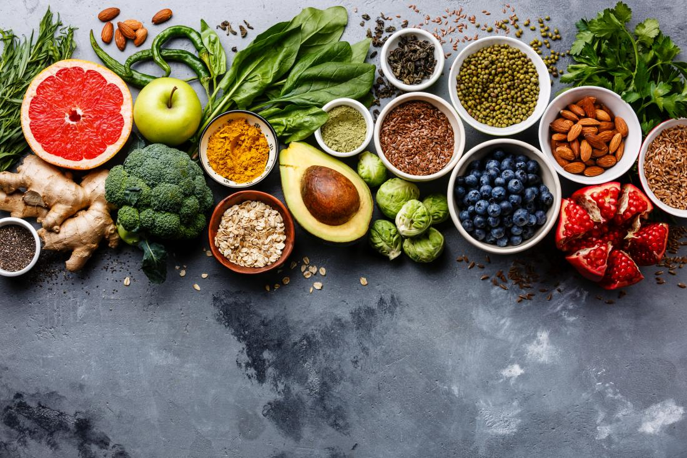

zero waste
It’s all about beginning with small life changes. By doing things like buying secondhand, using reusable containers, and composting food scraps, anyone can significantly reduce the amount of trash they produce.
buy nothing groups
Sets up local gift economies, using social media (facebook) to bring to the fore random acts of kindness for neighbors to partake in day-in and day-out.
social justice/ feminism
elenao/nothim is social movement created in Brasil that led to series of protests organized primarally by brazilian women motivated by the sexist declarations of Brasil's president and his threats to democracy.

clean eating
Taking a clean approach to food can be beneficial not only by making healthful choices and eating foods that contain few preservatives/added sugars but also to have more sustainable eating habbits.
travelling/photography
The first thing that must happen to get on the road to becoming a good photographer is falling in love with it. This is about your motivation and what drives you.